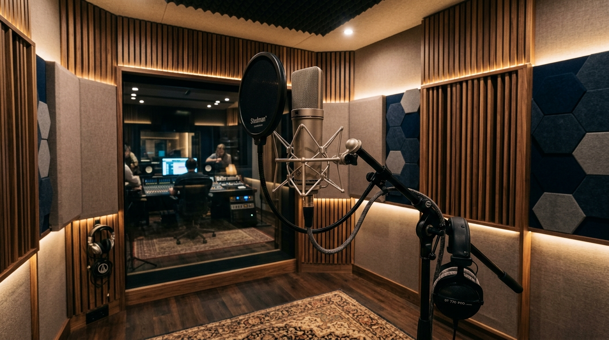
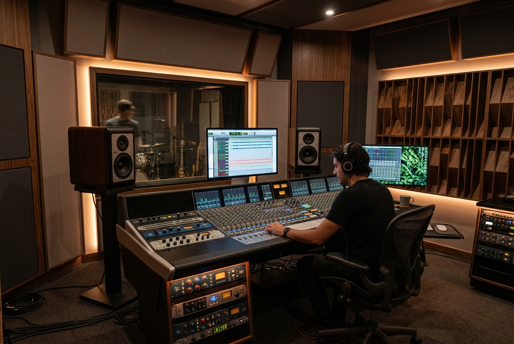
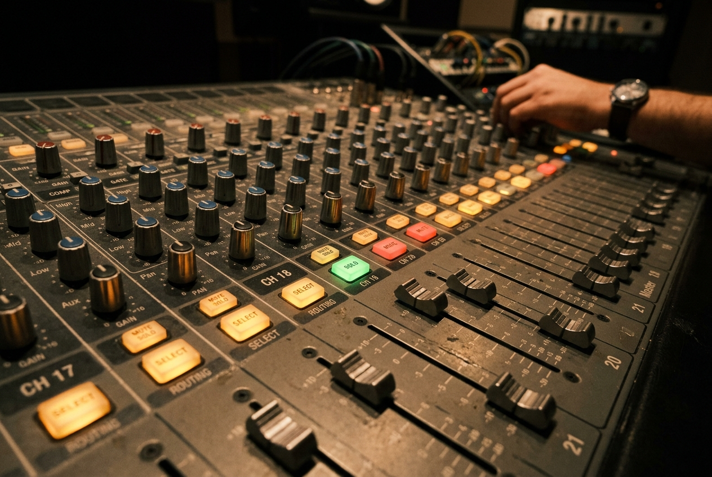
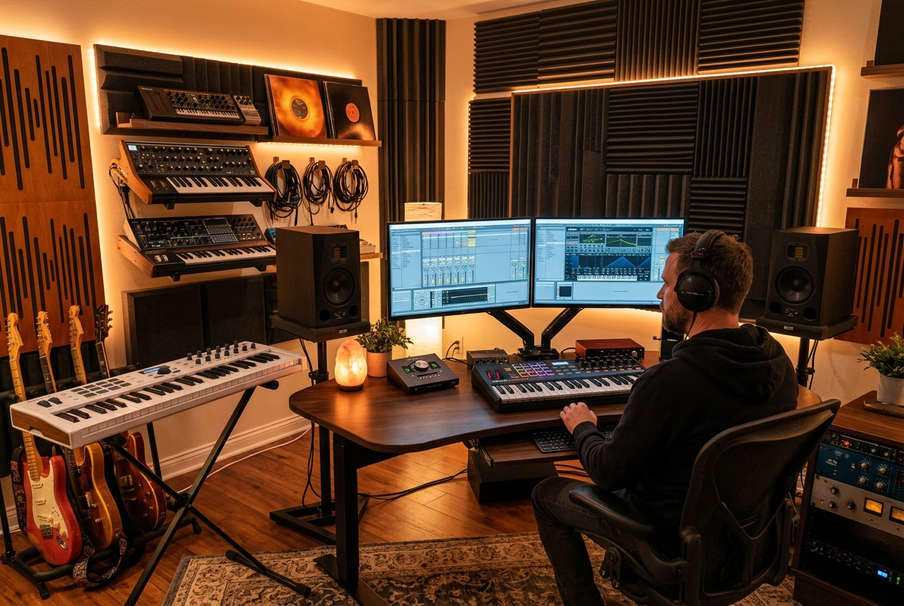

GOSPEL MUSIC • RECORDING • PRODUCTION
Where Faith
Meets Sound.
A creative music studio built for worshippers, gospel artists, choirs and producers who want their sound to be heard with excellence.

GOSPEL VIBESLAGOS • NIGERIA
01Professional
Recording
Recording
02Mixing &
Mastering
Mastering
03Vocal &
Music Production
Music Production
04Creative
Studio Sessions
Studio Sessions
WHY GOSPEL VIBES
More than a studio.
A sound community.
From the first vocal take to the final master, Gospel Vibes provides a focused environment where artists can develop their ideas and turn them into polished records.
INSIDE GOSPEL VIBES
The room where
the sound comes alive.



READY TO CREATE?